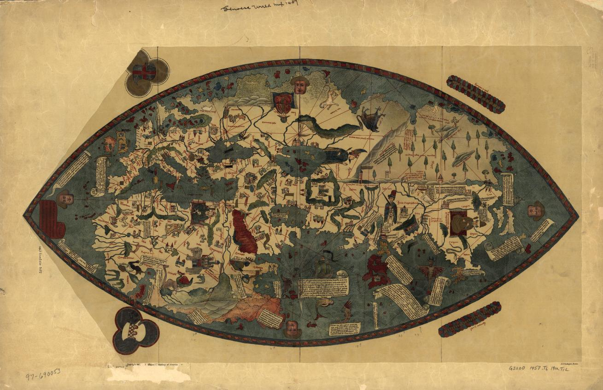

Aula 4: Expansão europeia nos séculos XV e XVI
![]()
quinta-feira, 26 de março de 2026
Acesse a apresentação
Aula 4
Conclusão: Sociedades Mexicas
Expansão europeia nos séculos XV e XVI
A Europa no século XV
O que os europeus conheciam do mundo?

Genoese World Map. [New York: Hispanic Society of America, 1912] Map. https://www.loc.gov/item/97690053/.
Planisfério de Waldseemüller (1507)
Primeiro mapa a nomear o continente como “América”.
Contexto europeu: formação dos Estados modernos
- Séculos XIV–XV: crise do feudalismo — pestes, guerras, fome
- Fortalecimento do poder monárquico sobre a nobreza feudal
- Formação de monarquias centralizadas: Portugal, Castela/Aragão, França, Inglaterra
- Novos instrumentos de poder: burocracia, exércitos permanentes, fiscalidade
Absolutismo e Estado moderno
- Concentração do poder político nas mãos do monarca
- Alianças entre coroa e burguesia mercantil contra a nobreza feudal
- Surgimento de cortes, conselhos reais e aparatos administrativos centralizados
- Portugal e Espanha: primeiros exemplos de monarquias com projeto colonial coordenado pelo Estado
Mercantilismo
Doutrina econômica que orienta as monarquias europeias nos séculos XV–XVII:
- A riqueza das nações mede-se pelo acúmulo de metais preciosos (ouro e prata)
- Balança comercial favorável: exportar mais do que importar
- Intervenção estatal no comércio e na produção
- Colônias: fornecedoras de matérias-primas e mercado consumidor para a metrópole
Mercantilismo e expansão marítima
O comércio com o Oriente era controlado pelos mercadores italianos (Veneza, Gênova) e pelas rotas terrestres dominadas pelo Império Otomano.
A busca por novas rotas comerciais torna-se imperativo estratégico para as monarquias ibéricas.
Reformas Religiosas (séc. XVI)
A unidade cristã da Europa Ocidental entra em crise:
- 1517: Martinho Lutero — as 95 Teses. Contestação das indulgências e da autoridade papal.
- Calvinismo (João Calvino, Genebra): ênfase na predestinação e na ética do trabalho.
- Anglicanismo (Inglaterra, 1534): ruptura de Henrique VIII com Roma.
Reformas Religiosas: impactos políticos
- Guerras religiosas na Europa: Guerra dos Trinta Anos (1618–1648)
- Contrarreforma (Concílio de Trento, 1545–1563): resposta católica, papel central dos jesuítas
- Portugal e Espanha permanecem católicos — missão evangelizadora como justificativa da colonização
- Inquisição como instrumento de controle religioso e político
A expansão marítima ibérica
A partir de:
BOXER, Charles R. O império marítimo português, 1415–1825. São Paulo: Companhia das Letras, 2002. [Cap. 1]
Charles R. Boxer (1904–2000)
Historiador britânico, maior autoridade do século XX sobre o império português.
Obras fundamentais: The Dutch Seaborne Empire (1965), The Portuguese Seaborne Empire (1969), O império marítimo português (ed. brasileira: 2002).
Portugal: pioneiro da expansão (séc. XV)
- 1415: Conquista de Ceuta — ponto de inflexão
- Exploração sistemática da costa africana sob patrocínio da coroa
- Infante D. Henrique (“o Navegador”): articulação entre coroa, nobreza e interesses mercantis
- Ilhas atlânticas: Madeira (1419), Açores (1427), Cabo Verde (1456)
A costa africana e o caminho para o Oriente
- 1441: primeiro carregamento de escravizados africanos para Portugal
- 1488: Bartolomeu Dias dobra o Cabo das Tormentas (Boa Esperança)
- 1498: Vasco da Gama chega à Índia — nova rota para as especiarias
- 1500: Pedro Álvares Cabral chega ao Brasil
A expansão espanhola
- Unificação de Castela e Aragão (1469): Isabel e Fernando — “Reis Católicos”
- 1492: financiamento da expedição de Cristóvão Colombo
- Tratado de Tordesilhas (1494): divisão do mundo entre Portugal e Espanha
- Expedições de conquista no Caribe, Mesoamérica e América do Sul (séc. XVI)
Um mapa de Colombo?

{kind=link}
Motivações da expansão
Boxer destaca a confluência de três ordens de motivações:
- Econômicas: especiarias, metais preciosos, rotas comerciais alternativas
- Políticas: prestígio das coroas, expansão do poder estatal
- Religiosas: evangelização, cruzada contra o Islã, “missão civilizadora”
O papel da tecnologia náutica
- Caravela: embarcação ágil, capaz de navegar contra o vento (vela latina)
- Aperfeiçoamento da bússola e do astrolábio
- Cartografia: portulanos e mapas cada vez mais precisos
- Artilharia naval: vantagem militar decisiva nos oceanos e nas costas africanas e asiáticas
Expansão marítima e escravidão africana
- O comércio de escravizados africanos começa antes da chegada às Américas
- A costa africana torna-se espaço de trocas desiguais e violência colonial
- A chegada às Américas intensifica exponencialmente a demanda por trabalho escravizado
- Tráfico atlântico: consequência estrutural da expansão ibérica
A expansão espanhola: um processo ibérico compartilhado
“Os portugueses e os espanhóis tiveram precursores (mais ou menos isolados) na conquista dos oceanos Atlântico e Pacífico”
BOXER, 2002, p. 31.
Por que a Espanha chegou depois?
- Portugal expulsou os muçulmanos de seu território ~dois séculos antes da conquista de Granada (1492)
- Castela e Aragão viveram um “tempo de perturbações” no séc. XV que “contribuíram muito para impedir que os espanhóis competissem tão eficazmente com Portugal” (BOXER, 2002, p. 34)
- Unificação de Castela e Aragão (1469): Isabel e Fernando — base política para a expansão
A caravela como elo
“Foi navegando nas caravelas portuguesas que Colombo adquiriu ao menos parte da sua perícia na navegação de alto-mar.”
BOXER, 2002, p. 43.
O instrumento técnico da expansão portuguesa tornou-se o veículo da invasão espanhola das Américas.
A Inter caetera (1493) e o Tratado de Tordesilhas (1494)
- Após 1492, a Espanha aciona a mesma lógica jurídica papal utilizada por Portugal desde 1452
- A Inter caetera concede às coroas espanholas o monopólio sobre os territórios “descobertos” a oeste
- Tordesilhas: divisão negociada do mundo entre as duas coroas ibéricas — competição e cooperação simultâneas
A carta de dom Manuel (1499)
Ao retornar da Índia, Vasco da Gama envia notícias de sucesso. Dom Manuel escreve carta jubilosa a Fernando e Isabel:
“[…] enormes quantidades de cravo, canela e outras especiarias […] rubis e toda espécie de pedras preciosas e terras onde há minas de ouro.”
BOXER, 2002, pp. 52-53.
A carta de dom Manuel (1499)
Dom Manuel intitula-se “Senhor da Guiné e da conquista, navegação e comércio da Etiópia, Arábia, Pérsia e Índia” — anunciando o triunfo precisamente aos soberanos espanhóis, seis anos após Colombo.
Síntese
- Estados absolutistas + mercantilismo = expansão como política de Estado
- Reformas religiosas: reforçam a missão “civilizadora” católica das coroas ibéricas
- Portugal precede a Espanha na exploração atlântica
- A expansão conecta três mundos: Europa, África e Américas
Bibliografia da aula
BOXER, Charles R. O império marítimo português, 1415–1825. São Paulo: Companhia das Letras, 2002. [Cap. 1]
NARDI, Tawnne T. de A. “Mesoamérica, Mexicas e Tlapanecas.” In: O império mexica e a província de Tlapa. Relações políticas e tributárias nos códices mesoamericanos (1461–1521). São Paulo: Universidade de São Paulo, 2019. pp. 25-54.

Eric Brasil | Entre em contato | CCLHM0076 — História da América: colonização e resistência